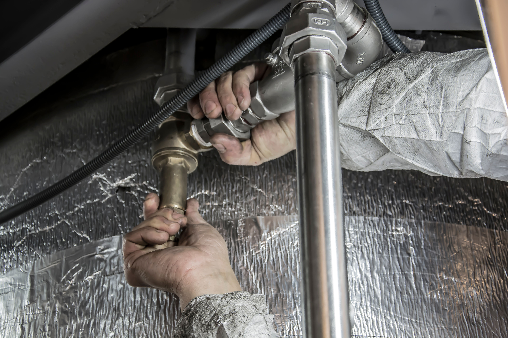

Plumbing Repairs
Assistance with common household plumbing problems and repairs.

Professional home plumbing solutions you can rely on. From repairs and maintenance to installations, Durban Home Fixing Plumbing is here to help.
Request a Plumbing ServiceDurban Home Fixing Plumbing provides reliable plumbing services for homeowners and families in Durban. Our goal is to provide practical, professional and dependable plumbing solutions for everyday household needs.
Learn more about our plumbing services and the areas we serve.
Assistance with common household plumbing problems and repairs.
Help with identifying and repairing household plumbing leaks.
Reliable maintenance solutions to help keep your home's plumbing working properly.
Find answers to some common questions about our plumbing services.
We assist with plumbing repairs, leak repairs, blocked drains, pipe repairs, bathroom plumbing and general plumbing maintenance.
We provide plumbing assistance in Durban and surrounding areas.
You can complete our online enquiry form and provide your contact details and information about the plumbing service you require. Visit our Enquiry page to get started.
Get in touch with Durban Home Fixing Plumbing to discuss your plumbing requirements.
Make an Enquiry Contact Us